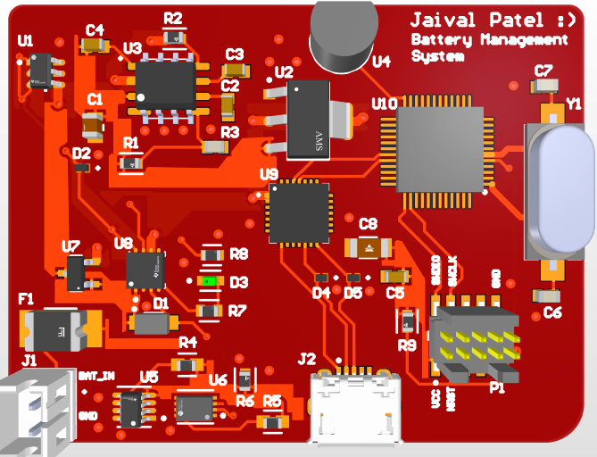

Battery Management System
Custom 3-rail BMS with battery monitoring, safe switching, and power integrity enhancements for embedded systems.
A selection of boards, simulators, and systems I’ve built. Each card links to a more detailed technical report with schematics, design decisions, and tests.
Custom 3-rail BMS with battery monitoring, safe switching, and power integrity enhancements for embedded systems.
Real-time neural stimulation board with Bipolar analog frontend, adaptive feedback control, precision current delivery, and STM32-based closed-loop actuation.
Power management board for avionics of the Discovery Liquid Rocketry at UTAT.
RF signal and communication board for wireless monitoring of microwave sensors at ISML.

TPS561208DDCR breakout board.